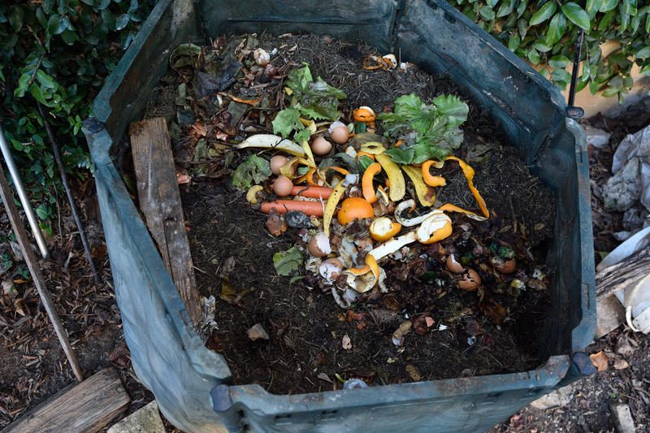

April 2, 2019
Overcoming Your Composting Challenge

Composting is easy out here in the countryside, but people are getting together to make composting possible in all kinds of environments. So, if you live in city, or in an apartment in the suburbs, here’s a little inspiration from Finley’s cousin Evan and his fiancé Katie—as well as a few links that might help you with your own composting challenge.
Desert compost
Composting in the extreme heat of Phoenix, Arizona poses unique challenges. The heat, the sandy soil composition, and the lack of water make backyard composting difficult. But food waste is a monumental problem. Americans throw away an average of 300 million pounds of food a day. Over the course of a year, this means that 30 million wasted acres of land and 4.2 trillion gallons of water go to waste. Composting is one way of reducing food waste, by taking our unused produce and letting it decompose naturally into soil, which can then be used for healthy local food production.
That’s why Finley’s cousin Evan and his fiancée Katie out in Phoenix joined a community composting service to put their food waste to use. Because the community compost program has more resources and a more controlled environment than a backyard compost pile, Katie and Evan are able to compost things that may not otherwise be compostable, like meat, dairy, and bread. The program also ensures that the food waste can properly decompose into healthy soil, despite the constraints of the desert climate. And at the end of it, the program sends its soil to gardeners and an indoor Community-Supported Agriculture to grow food locally and with less water waste.
Rather than filling up dumpsters and landfills, their coffee grounds, eggshells, potato peels, and zucchini stems can go back to the circle of life, making healthy soil for healthy plants.
And if you’re looking for a place to compost in Virginia, DC check out these groups! https://www.litterless.com/where-to-compost/virginia